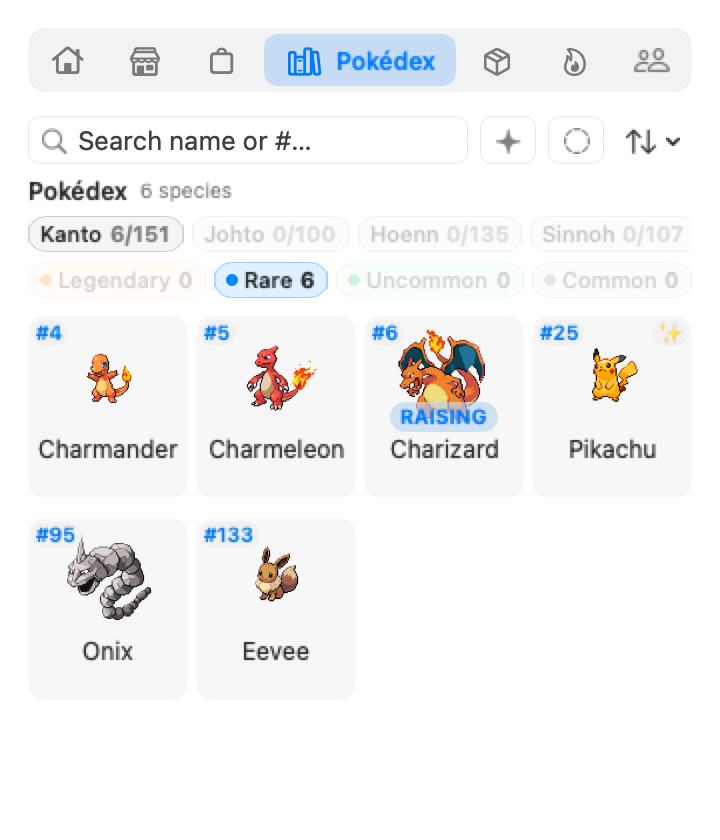
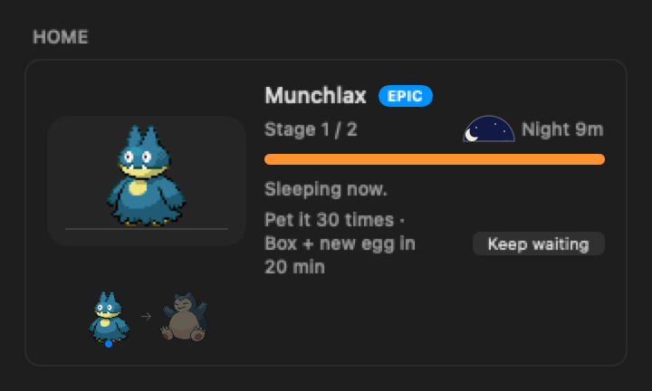
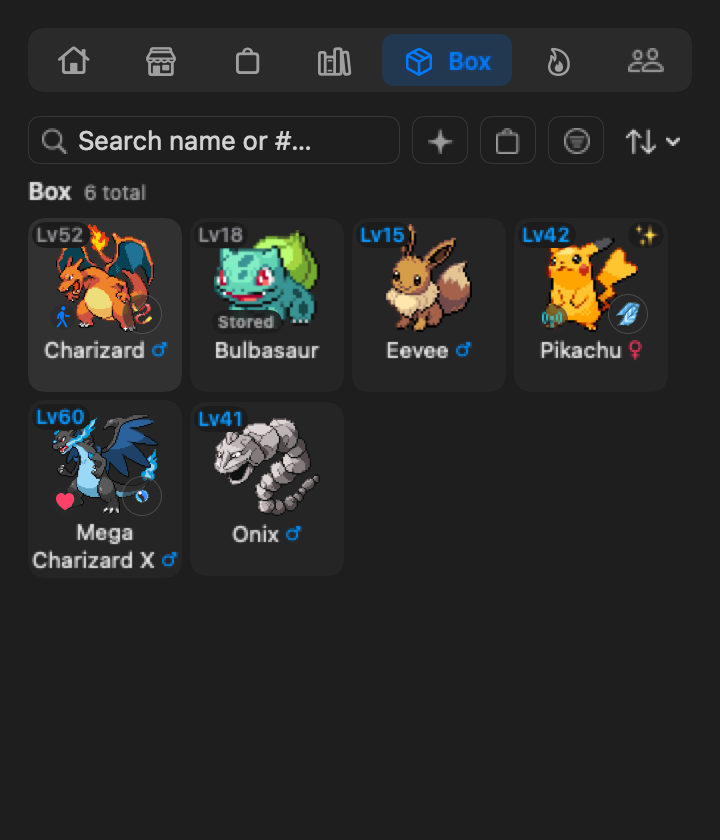
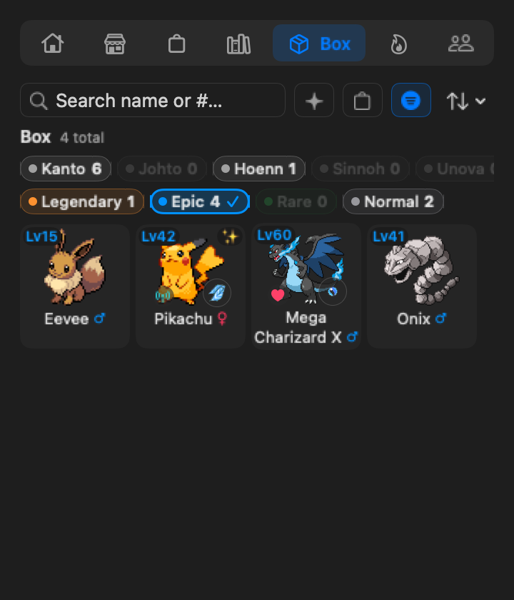
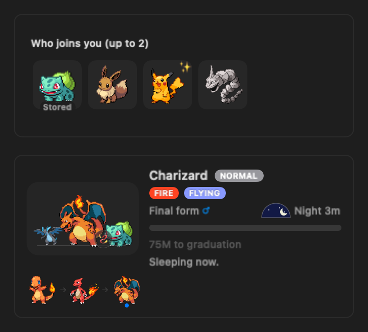
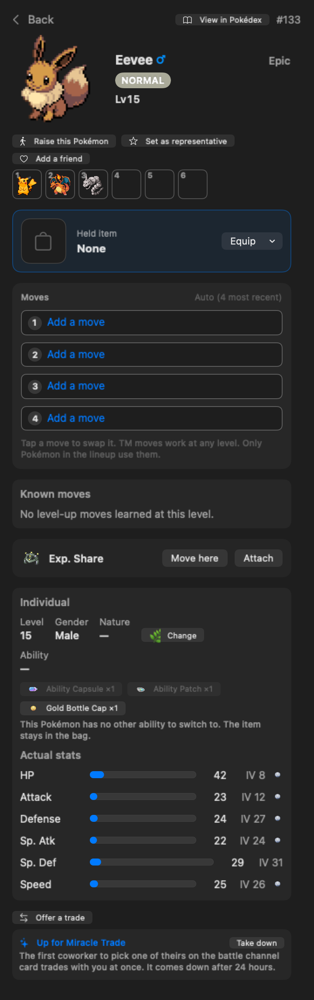

Graduates fill a Gen 1–9 Pokédex, and the Box keeps every Pokémon you own. Bring friends along, trade with coworkers and pick your next egg.
Only in PokeTokenBar-yp
The full Pokédex, Gen 1 to 9
The Pokédex runs to #1025, and an egg can start any of 540 Gen 1–9 lines. A legendary hatch is about 1 in 48. The regional filter covers nine regions, Kanto to Paldea, and the national badge counts all 1,025.
Pokédex
One cell per species you have owned, 16 per page. Search, sort, filter by rarity, Shiny or region, and earn completion badges.
Region badges
Filter by region and check its owned and shiny counts. Earn a badge for a region, its shiny set, all 28 Unown or all 1,025 species. Badges don’t change hatch odds.
Shiny
A rare hatch keeps its shiny colors through every evolution. The Pokédex marks species you own as shiny and lets you switch between looks.

Native UI renders · sample states
Only in PokeTokenBar-yp
See what comes next
A Pokédex page shows how the species evolves next and what the app asks for, like Munchlax’s 30 pets to become Snorlax. When the Pokémon you raise is on that path, the card shows its progress. On Home, tap the next form to open its page. If its next step waits on you and the app stays closed for 30 minutes, it moves to the Box and the closest Box line or a new egg takes its place; Keep waiting or a Settings toggle stops that.

Native UI renders · sample states
Alternate forms
Collect Rotom appliances, Deerling seasons, Unown letters and other Gen 1–5 forms. A form follows evolution and stays in your save.
Native UI renders · sample states
Only in PokeTokenBar-yp
The Box
The Box tab holds every Pokémon you own: the one you raise, your friends and your graduates. Search, filter by region, grade, Shiny or held item, and sort. A new egg sends your current Pokémon here instead of releasing it, and you can pick a graduate to raise again.
Region and grade chips
Two chip rows over the Box grid filter by region and by grade, each with a count. A Pokémon’s region follows its current species.


Native UI renders · sample states
Only in PokeTokenBar-yp
Friends beside your partner
Pick up to two friends from your graduates and the Pokémon waiting in the Box. They stand next to your partner on Home and on the floating pet in their current form, and petting a friend pops a heart over it. When a new egg or a scout sends your partner to the Box while a slot is free, it joins as a friend.

Native UI renders · sample states
Only in PokeTokenBar-yp
Miracle Trade
Put a tradable Pokémon up for Miracle Trade from its Box page, and the YPoke bot posts it as a card in the battle channel. The first coworker to pick one of their own Pokémon on the card trades with you at once, and both Pokémon arrive like any other trade. One offer at a time; take it down from the Box page or the card, or let it expire after 24 hours. Pick lists in Slack now tell look-alike Pokémon apart by sex, Shiny and nature, then #2 and #3.

Native UI renders · sample states
Trades and new eggs.
Only in PokeTokenBar-yp
Trades and the Linking Cord
Trade graduated Pokémon with a linked coworker from the Friends tab, or send one straight from its Box page; the other side accepts in Slack. Trade evolutions such as Haunter or Kadabra wait for a trade, or for a Linking Cord from the Shop. Some also need a held item first, like Onix with a Metal Coat. The item is used up when the Pokémon evolves.
Only in PokeTokenBar-yp
Scout Tickets and better eggs
A Scout Ticket shows 10 random Pokémon from one region, or from all of them, and you pick the egg you want. A Rare Egg hatches Rare or better, and an Epic Egg hatches Epic or better.